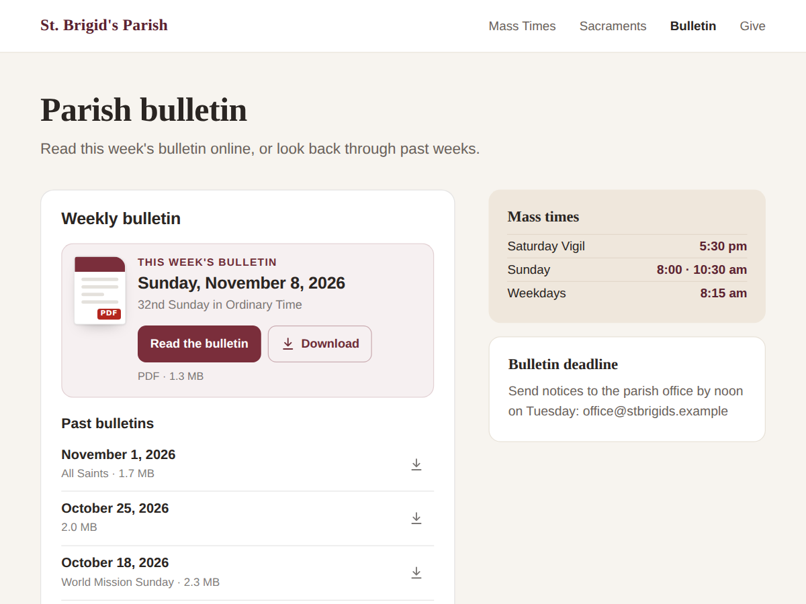

Church Bulletin
Weekly church bulletin PDFs, newest on top
- Upload the PDF; it becomes this week's bulletin
- Past bulletins listed below, newest first
- Dates read from the file name, no typing
- Full archive by month, search, tabs (Premium)

What it does
Upload this week's bulletin PDF to one folder in your Media Manager, and it appears on your page as this week's bulletin, with a button to read it. Last week's moves down into the list of past bulletins. Nothing to edit on the page each week.
The date comes from the file name: "Bulletin 2026-11-08", "Nov 8 2026" or "11.8.26" all work, and "Sunday 25th June 2023" too. Whatever else is in the name, such as "32nd Sunday in Ordinary Time", shows under the date. Files without a date use the day you uploaded them.
On a computer the bulletin opens in a reader over the page, with buttons to download it or open it in a new tab. On a phone it opens in the phone's own viewer.
It works the same way for meeting minutes, a school lunch menu or a newsletter: pick what the folder holds and the wording changes to match, such as "Latest minutes". You can write your own labels and pick the colours and font.
Only public files are listed. Private files are never shown.
The free plan shows this week's bulletin and the last 8. Premium shows the full archive grouped by month, adds a search box, shows several folders as tabs, lets you hide the download buttons, and removes the credit link.
Price
Free
- This week's bulletin and the last 8
- PDF reader over the page
- Your wording, colours and font
- Small credit link
Premium
$4/month, yearly 20% off
- Full archive, grouped by month
- Search box for visitors
- Several folders as tabs
- Remove the credit link